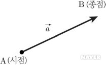

크기와 방향을 동시에 나타내는 물리량을 말한다. 예를 들면 변위 · 힘 · 속도 · 가속도 등은 크기와 방향을 동시에 나타내는 벡터이다. 두 벡터를 와 라고 할 때 를 벡터의 내적이라고 한다. 두 벡터가 이루는 각을 θ라고 하면 는 스칼라량이 되며 그 크기는 ABcosθ가 된다. 즉, 이다. 어떤 물체에 F의 힘을 주었을 때 물체가 힘의 방향과 θ의 각을 이루는 방향으로 s만큼 움직였을 때 한 일은 W=Fscosθ이다. 이것을 벡터의 내적을 이용하면 로 간단히 나타낼 수 있다. 벡터의 외적은 로 나타낸다. 두 벡터가 이루는 각을 θ라고 할 때 는 벡터량이 되며 크기는 ABsinθ가 된다. 즉, 이다. 이것은 와 가 만드는 평행 사변형의 면적과 같고 방향은 에서 로 오른나사를 돌릴 때 나사의 진행 방향과 같다.
